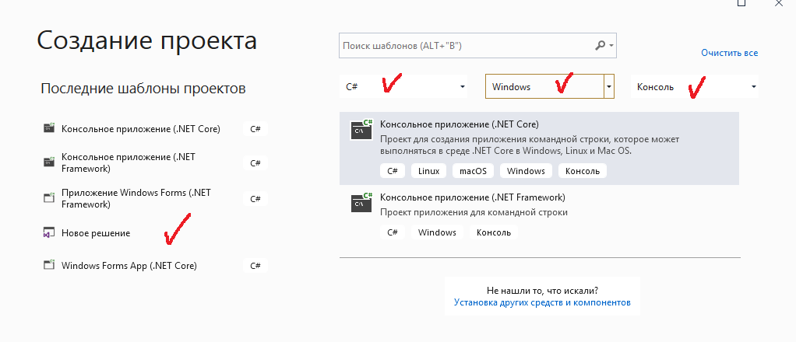
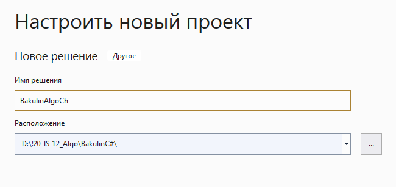
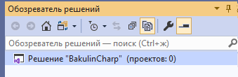
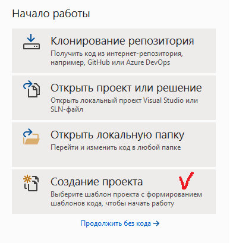
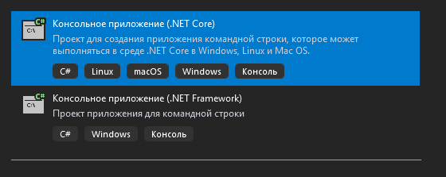
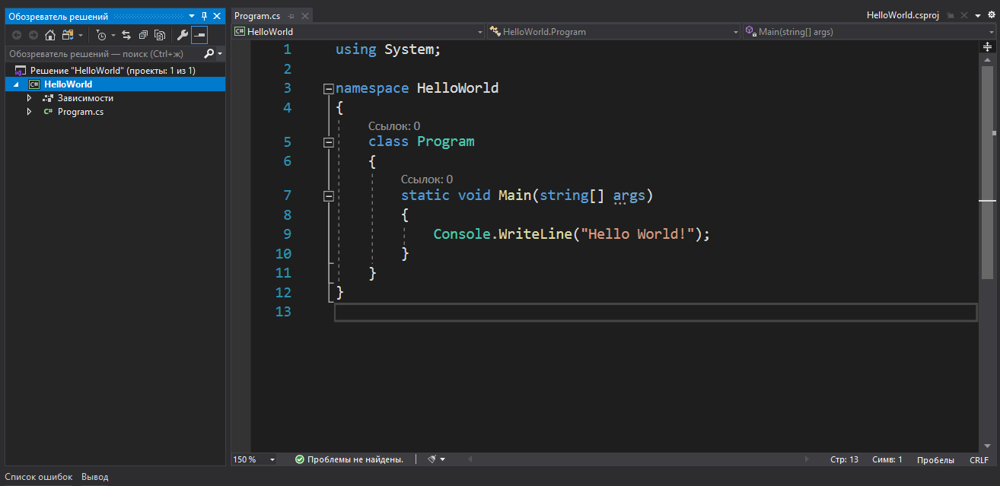
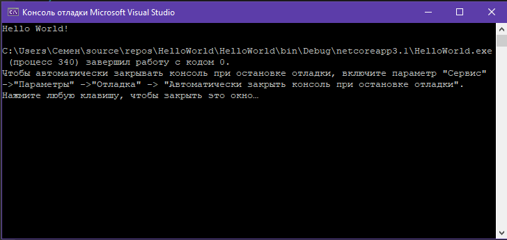

| Тема 2 Создание проектов в решении BakulinC# в среде разработки Microsoft Visual Studio Community 2019. | ||
| Назад | ||
Создание пустых решенийСоздавать пустые решения не содержащие проектов, предпочтительно если вы хотите создать решение и проекты с нуля. Создание пустого решения
После создания пустого решения к нему можно добавить новые или существующие проекты или элементы, выбрав пункт Добавить новый элемент или Добавить существующий элемент в меню Проект. 

 Удаление решения, проекта или элементаКонтекстное меню можно использовать для удаления решений, проектов или элементов в Visual Studio, но только, чтобы удалить их из текущего решения или проекта. Чтобы полностью удалить решение или другой компонент из системы, удалите папку, содержащую файлы SLN и SUO решения, используя проводник Windows. (Перед удалением решения вы, возможно, захотите выполнить резервное копирование проектов и файлов на случай, если они вам понадобятся позже). Создание проекта в Visual StudioОткройте Visual Studio и на стартовом экране выберите пункт «Создание проекта».
 На следующем окне в качестве типа проекта нужно выбрать Консольное приложение (.NET Core). Это значит, что мы будем создавать приложение командной строки на языке C#.
 В следующем окне зададим название проекта. Пусть будет HelloWorld. На этом этапе также можно указать папку, где будет располагаться проект. После этого нажмите кнопку «Создать». Visual Studio создаст и откроет проект. Окно будет выглядеть так:
 В нашем редакторе в центре находится сгенерированный по умолчанию код C#. Впоследствии мы изменим его на свой. Слева находится обозреватель решений, в котором можно увидеть структуру нашего проекта. В данном случае в обозревателе сгенерирована структура по умолчанию. В узле «Зависимости» содержатся сборки, которые добавлены в проект по умолчанию — классы библиотеки .NET, которые будет использовать C#. Однако не всегда все сборки нужны. Лишнее содержимое отсюда потом можно удалить. Или, наоборот, добавить какую-нибудь нужную библиотеку — именно в этом узле она будет размещена. Hello worldПод узлом «Зависимости» расположен непосредственно сам файл кода программы — Program.cs. Как раз он и открыт в центральном окне. Вначале разберёмся, что весь этот код собой представляет: using System; namespace HelloWorld { class Program { static void Main(string[] args) { Console.WriteLine("Hello World!"); } } } В начале файла мы видим директиву using, после которой идёт название подключаемого пространства имён. Пространства имён необходимы для организации классов в общие блоки. Например, в первой строке подключается пространство имён System, которое содержит фундаментальные и базовые классы платформы .NET. C# имеет C-подобный синтаксис, и каждая строка завершается точкой с запятой, а каждый блок кода помещается в фигурные скобки. Далее начинается уже наше пространство имён HelloWorld, которое будет создавать отдельную сборку или исполняемую программу. Сначала идёт ключевое слово namespace, после которого следует название пространства имён. По умолчанию Visual Studio даёт ему название проекта. Далее внутри фигурных скобок идёт блок пространства имён. Пространство имён может включать другие пространства или классы. В нашем случае по умолчанию сгенерирован один класс — Program. Классы объявляются похожим способом: сначала идёт ключевое слово class, а потом название класса, и далее блок самого класса в фигурных скобках. Класс может содержать различные переменные, методы, свойства, прочие инструкции. В данном случае объявлен один метод Main. В программе на C# метод Main является входной точкой программы, с него начинается всё управление. Это обязательный элемент любой программы. Слово static указывает, что метод Main статический, а слово void — что он не возвращает никакого значения. Далее в скобках у нас идут параметры метода. string[] args — это массив с именем args, который хранит значения типа string, то есть строки. В данном случае они нам пока не нужны, но в реальной программе это те параметры, которые передаются при запуске программы из консоли. Внутри метода располагаются действия, которые этот метод выполняет. По умолчанию он содержит одно действие: Console.WriteLine("Hello World!"); - выводит в консоль строку "Hello World!". Теперь мы можем запустить программу на выполнение с помощью клавиши F5 или с панели инструментов, нажав на зелёную стрелку. И если вы все сделали правильно, то при запуске приложения увидите заветную строку.
 Ин
|
||
| Конспект подготовлен Бакулиным А. М. 2022 год. | ||